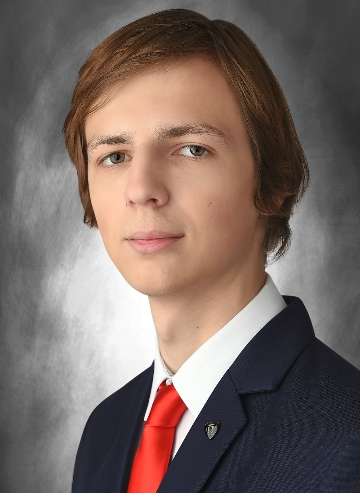

Bemutatkozás:
Papp Dániel Miklós Vagyok, a Budapesti Műszaki és Gazdaságtudomány Egyetem Gépészmérnöki karának első féléves energetikai mérnök alapszakos hallgató.
Véleményem szerint eléggé nyitott ember vagyok, mivel szeretek társaságban lenni, beszélgetni másokkal és mesismerni új embereket és szokásokat.
Rettentő kíváncsi természetem van, így számos dologba ástam bele magam. A szerintem legizgalmasabb témák, amikkel a legtöbbet foglalkoztam
a 3D nyomtatás, a VR és AR technológia és a kínai harcművészetek.